Six annotated states from one fresh normal1366 run, plus its real defender decision. Current baseline and proposed changes are explicitly separated. This covers engaged Sonoro and no voluntary defender; ready requirements, Flight/Torment and all-view input remain open. A later compact companion run appears below.
Fresh native pre-action board. War is ready; opposing Sonoro is engaged. Native card identities and health30/30 are public. Proposal: show the legal attack accent without requiring long text.
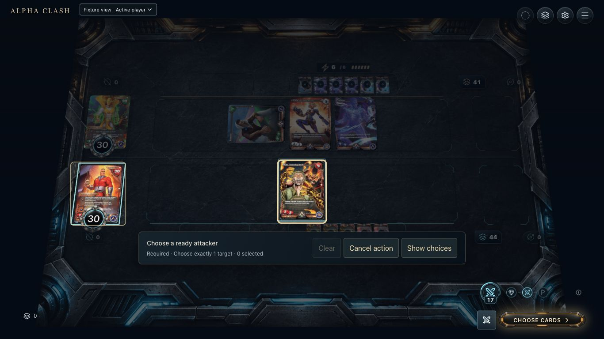
2
2. Focus
Clash opens the native attacker picker. Keyboard focus is placed on War with a modifier key; no gameplay command is submitted. Eligible cards have native frames. Proposal: keep focus distinct from eligibility and expose the source name accessibly.
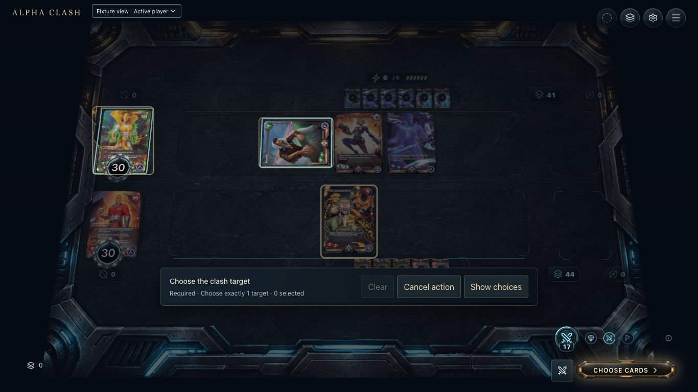
3
3. Selected
War is the selected attacker, before target acceptance. Only native-legal attack targets are offered. The selected pair is a draft until the target click submits. Proposal: retain a dotted source-to-target preview.
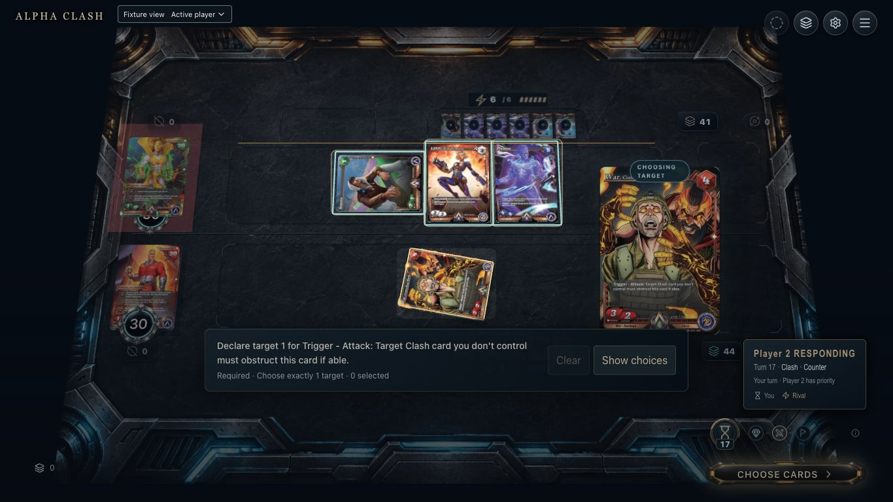
4
4. Pending
Attack has been accepted and its native War trigger awaits a target. Sonoro, LINN and Plasmax are real candidates. Long raw trigger and Player2 RESPONDING copy do not clearly name the owed choice owner. Proposal: a source badge and short Force an obstructor intent, with full accessible text.
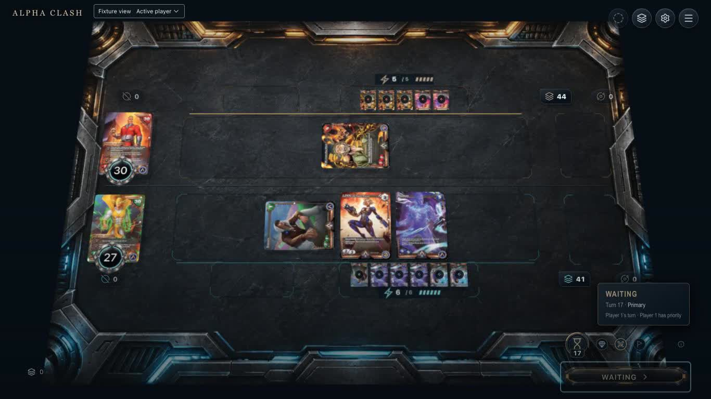
5
5. Resolving boundary
Normal recording3.1s, immediately after native defender pass. Health is already27, all cards remain in play. This frame proves accepted result, not a polished impact timeline. No source-to-health impact or required-target explanation is visible. Proposal: accepted event drives shared Resolve token, impact and three-health delta; never delay native input.
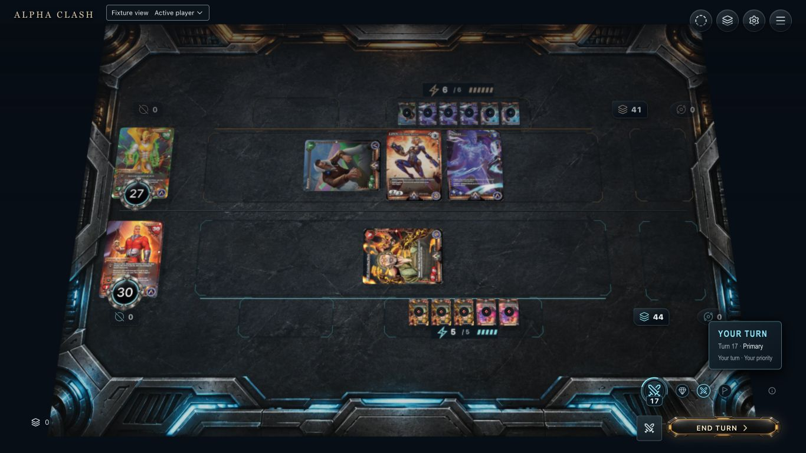
6
6. Completed
Normal recording settled Player1 Primary. Health30/27, Clash1/3, Oblivion0/0, decks44/41. War and Sonoro are spent; voluntary defenders remain ready. No native intermediate snapshot is fabricated. Reconcile to this state after interruption.
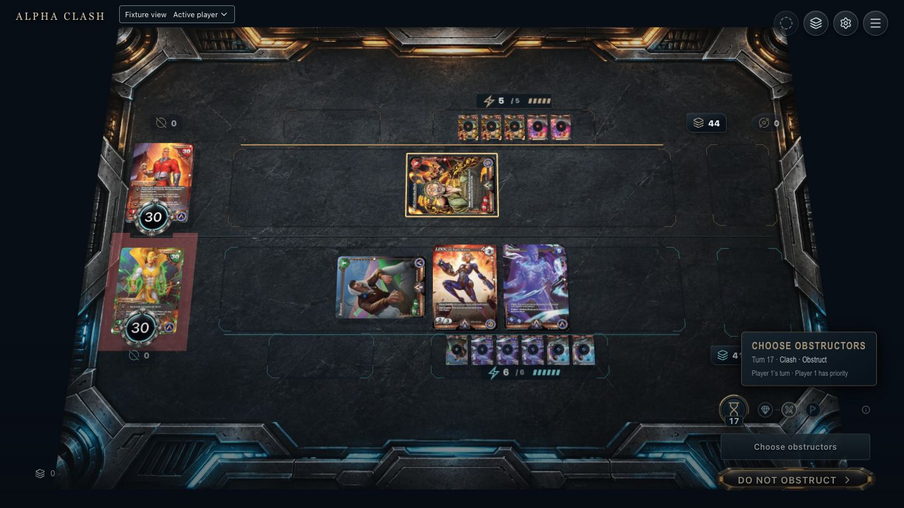
Defender decision
After the trigger, hot-seat handoff exposes Choose obstructors and Do not obstruct. Engaged Sonoro cannot join. Current priority copy remains ambiguous and no fixed-target link explains the exception. Enter Do not obstruct is a real native pass.
These images and recordings precede the public decision-seat repair. Current repaired ownership screenshots follow below; required-link and impact gaps remain open.
Matched native recordings
Both reset before action, set Hot seat as a control preference, and advance only through board controls. Normal output contains app audio; muted/reduced output has zero decoded samples. Change-frame count and30FPS encoding are not renderer FPS. No perceptual mix, exact cue synchronization or GPU performance acceptance is claimed.
Normal motion and native app outputMuted and reduced motion, same native result
Later native ownership repair
Fresh1366 board runs; no action/log panel use. Same legal boundary and result. YOUR CHOICE names the target decision separately from response priority; Obstruct names the defender decision.
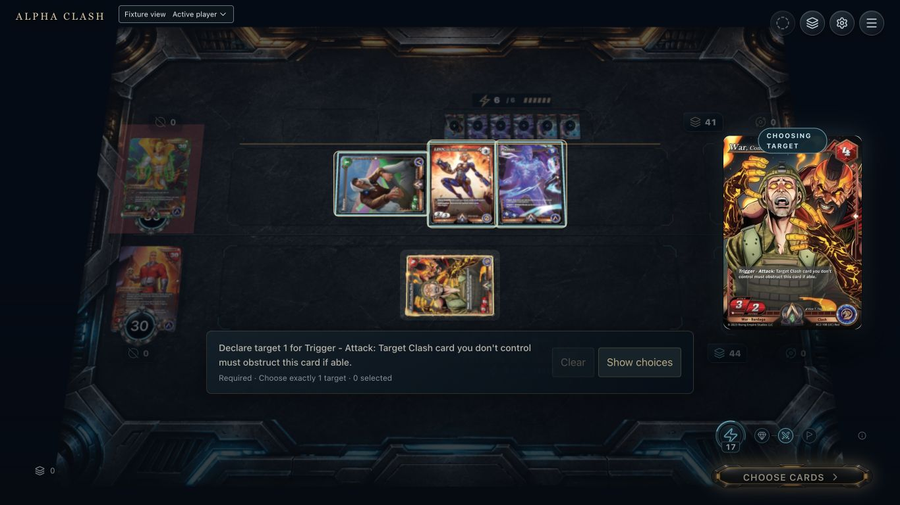
War target decision owner
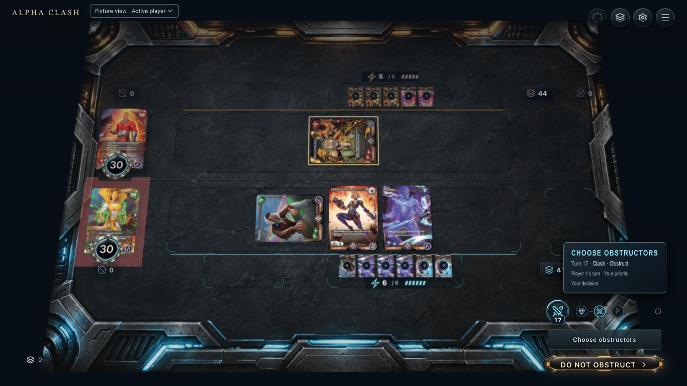
Defender Obstruct ownership
Merged layout: compact pointer acceptance
Fresh844×390 board inputs complete cancel/retry and explicit LINN obstruction. Both players remain at30; War and LINN enter Oblivion. Direct pile pointer input still collides with phase help; the pile capture uses keyboard inspection. Prior videos remain historical.
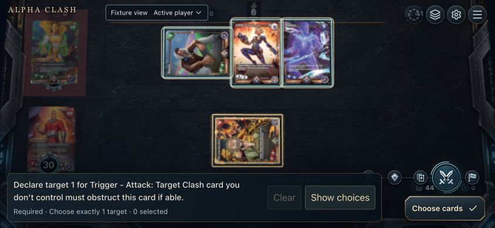
Native War trigger after compact pointer attack
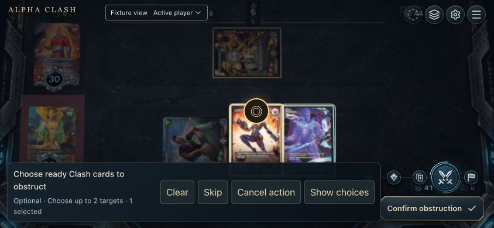
LINN selected by pointer; Sonoro excluded
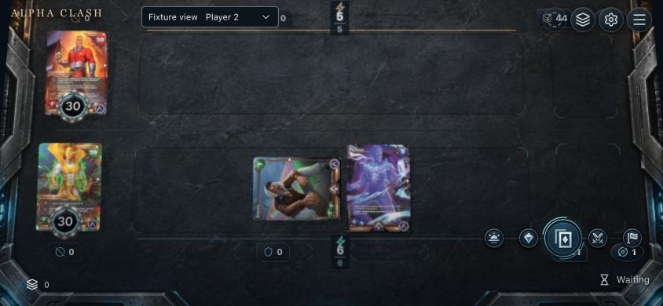
Settled defender result: both health30
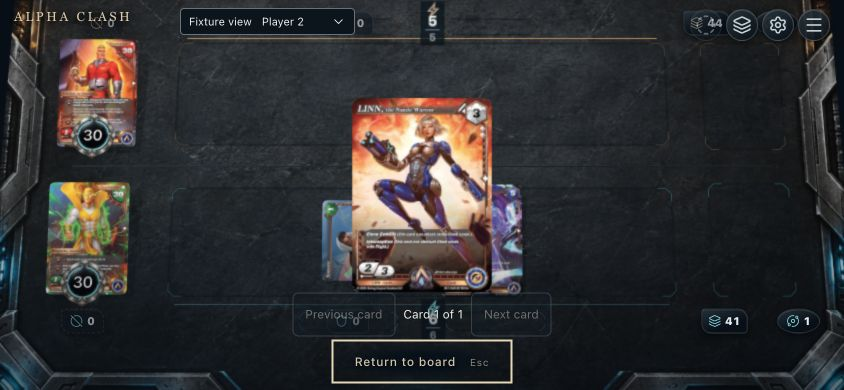
Keyboard pile inspection confirms LINN
Later pile pointer repair
Compact phase controls now end above the pile targets. Empty console space passes pointer input to the board. Direct clicks inspect War and LINN from their owner views; the hidden deck remains private. Physical touch remains unverified.